Overview & Architecture
Introduction & Lab Objectives
Risk and compliance teams need to understand where assessments are incomplete and document the work required to address them. In this lab, you will use an AI risk agent to query live IBM OpenPages data, explain an assessment gap, create a risk record, and link an existing control to that risk through plain-language requests.
IBM Bob handles setup using the supplied lab project. IBM watsonx Orchestrate runs the agent, and the Model Context Protocol (MCP) connects it to the OpenPages tools. You will inspect the recorded execution to understand how the agent obtained its evidence and carried out your requests.
The Scenario
You are a risk analyst at a financial institution. Controls in your assigned lab environment are marked Awaiting Assessment. Your task is to identify the affected risk categories, explain the findings, and document a gap for follow-up.
The guided prompts follow a connected workflow: find the gap, explain it, log a risk, and link a control. The category and record counts depend on the data in your environment. Use those results to guide the risk you document.
An unassessed control indicates an assessment gap. It does not, by itself, establish that a control has failed or that the organisation is non-compliant.
The Components and Their Roles
| Component | Role in this Lab |
|---|---|
| IBM Bob Prepare the solution | Uses the supplied project and Lab 2308 mode to configure your environment, register the OpenPages MCP toolkit, and import the risk agent into watsonx Orchestrate. |
| IBM watsonx Orchestrate Run and inspect the agent | Hosts lab2308_risk_agent, interprets requests, selects tools, and presents results in Chat. AgentOps Observability provides access to recorded execution details. |
| Model Context Protocol (MCP) Connect the agent to tools | Provides the interface through which the agent accesses the schemas and operations exposed by the lab’s OpenPages MCP server. |
| IBM OpenPages Maintain the GRC records | Holds the risks (SOXRisk), controls (SOXControl), object schemas, and relationships that the agent reads or changes. The lab materials also refer to this environment as the Governance Console within watsonx.governance. |
What You Will Learn
- Use Bob to configure the supplied agent and integration assets.
- Query live risk and control data using natural language.
- Inspect how schema retrieval helps the agent use valid field names and permitted values.
- Create a risk record and associate an existing control through explicit requests.
- Check the resulting records in OpenPages and inspect the corresponding tool activity in Orchestrate.
Lab scope: You direct the workflow through prompts. The agent selects and executes the corresponding tools. This exercise demonstrates agent-assisted risk work rather than a complete control assessment or compliance determination.
Architecture & Request Flow
The solution separates setup from runtime. Bob prepares the agent on your workstation. Once setup is complete, you chat with the risk agent in watsonx Orchestrate (in your browser), and the agent accesses OpenPages through the MCP server.
Solution Architecture
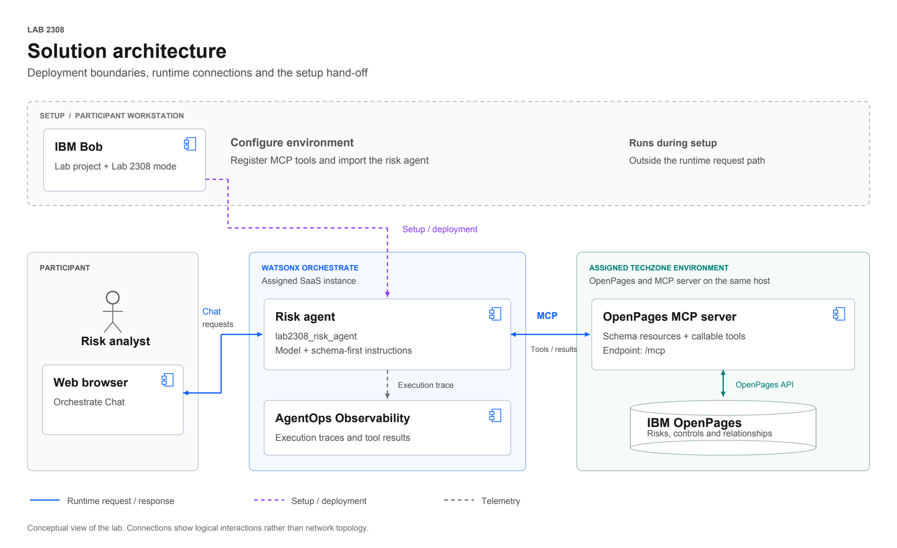
Setup: Bob Configures the Agent
Open the supplied project in Bob and select Lab 2308 mode. Give Bob the MCP Server URL, watsonx Orchestrate Instance URL, and IBM Cloud API key you collect in the Prerequisites. Bob uses these values to configure the environment, register the MCP tools, and import lab2308_risk_agent.
Bob supports setup and troubleshooting. It is outside the runtime request path once the agent is available in Orchestrate.
Runtime: Orchestrate Calls OpenPages Through MCP
In Orchestrate Chat, select lab2308_risk_agent and submit a request. The agent selects the appropriate tools, and the MCP server translates those tool requests into OpenPages API calls. Results return through the same integration. Successful write operations change records or relationships in your assigned OpenPages environment.
The MCP server and OpenPages run in the same assigned TechZone environment. The /mcp endpoint serves tool requests. The /openpages endpoint opens the application where you can verify the records.
The Lab Conversation, Traced End to End
The sequence below follows the guided scenario across the participant, risk agent, MCP server, and OpenPages. It shows the system interactions behind the conversation, including the explicit requests to create a risk and link a control.
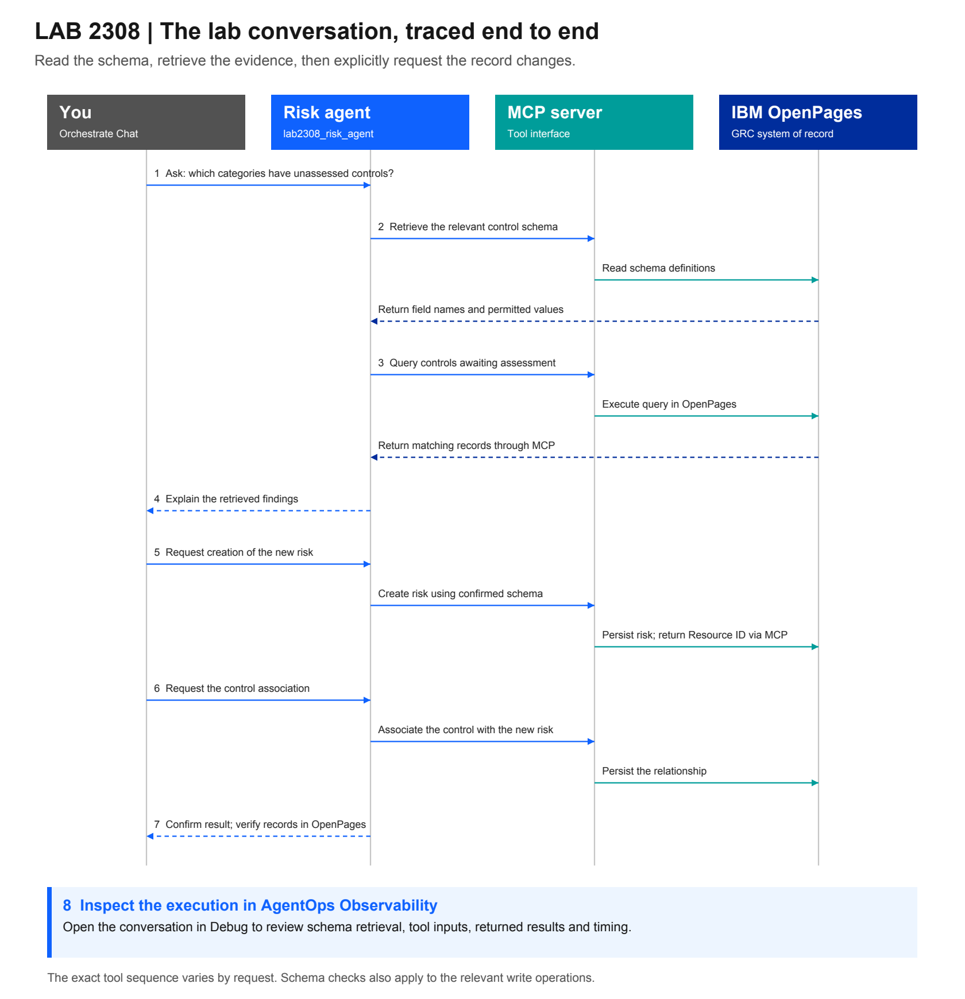
Why the Agent Reads the Schema First
OpenPages uses specific object types, field names, and permitted values. The agent uses openpages_get_resource to inspect relevant schemas, such as openpages://schema/SOXControl, before constructing operations that depend on those definitions. This reduces reliance on guessed field names and values. It does not guarantee that every request will succeed.
The scenario uses execute_openpages_query to retrieve records, openpages_upsert_object to create the risk, and openpages_associate_objects to link the control. Schema checks also apply to the relevant write operations.
Verify the Outcome and Inspect the Evidence
Open the new risk in OpenPages and check its fields and control relationship. Then return to Orchestrate and follow AgentOps → Observability → your agent → Conversations → Debug. Inspect the available schema responses, query payloads, write results, and execution timing to connect what the agent reported with what the tools returned.
Before You Start - IBM ID, Environment Credentials & Your Excel File
Do these three things first, in order. Everything else in the lab depends on them.
Step A: You need an IBM ID
You must already have an IBM ID before anything else. You will use it to sign in to TechZone (next step) and to sign in to Bob.
Step B: Get your environment credentials
- Open this link: https://ibm.biz/~e87ccFkGv
- When asked for the lab access code, enter:
techxLAB-2308-c167 - Click Validate access code.
Step C: Download your Excel file
1. Find your student number
In the left navigation bar of TechZone, open My events. Under LAB-2308 you will see an entry called Student X - LAB-2308. The number is your student number. The example below is student 1.
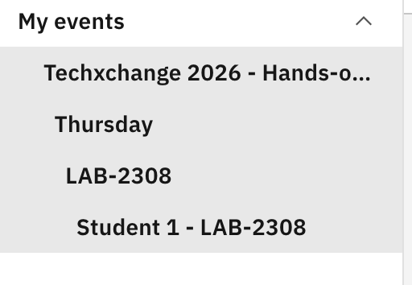
2. Enter your student number
Type your number below and the page shows the exact file name and password to use.
Enter a number to see your file name and password.
3. Download and open the file
- Open this link: https://ibm.biz/lab2308-env
- Download the Excel file with the file name shown above.
- Open the file and enter the password shown above.
This Excel file has everything you need for the next sections: your IBM Cloud login, your OpenPages link and your MCP SERVER URL. Keep it open.
0 Prerequisites - Key Information You Need for This Lab
When you start Module 1, Bob will ask you for three pieces of information. This section shows you what they are and where to get each one. You do not need to have them ready yet: the steps below walk you through finding every one.
0.1 What Bob Will Ask You For
| Bob asks for | Where you get it |
|---|---|
| 1. ★ MCP SERVER URL | Already in your Excel file (LAB2308_Student_XX.xlsx), under PART 2 - OpenPages / watsonx.governance. It ends in /mcp. See step 0.6. |
| 2. ★ WXO INSTANCE URL | Not in the Excel file. You copy it from IBM Cloud in step 0.4. |
| 3. ★ IBM CLOUD API KEY | Not in the Excel file. You create it in IBM Cloud in step 0.5. |
Your Excel file also holds your IBM Cloud login and your OpenPages login. You use those in the next steps, but you do not give them to Bob.
You do not need to edit any files, run any commands, or touch any YAML. Once you give Bob those three values, Bob does the rest.
0.2 Log In to IBM Cloud
Open a Private / Incognito browser window. Find the IBM Cloud Login URL in your Excel file (under PART 1) and paste it into your browser. Enter the App ID Username and App ID Password from the same section, then click Sign in.
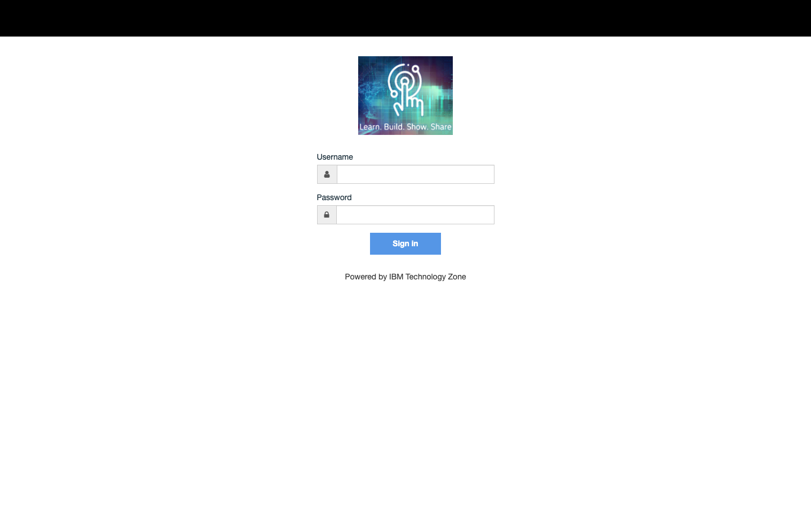
0.3–0.4 Open Your WxO Instance & Copy the URL from IBM Cloud
Go to cloud.ibm.com/resources → AI / Machine Learning → click your watsonx Orchestrate instance.
You will land on the page shown below. The WxO Instance URL is not in your Excel file - you copy it from the Credentials box here.
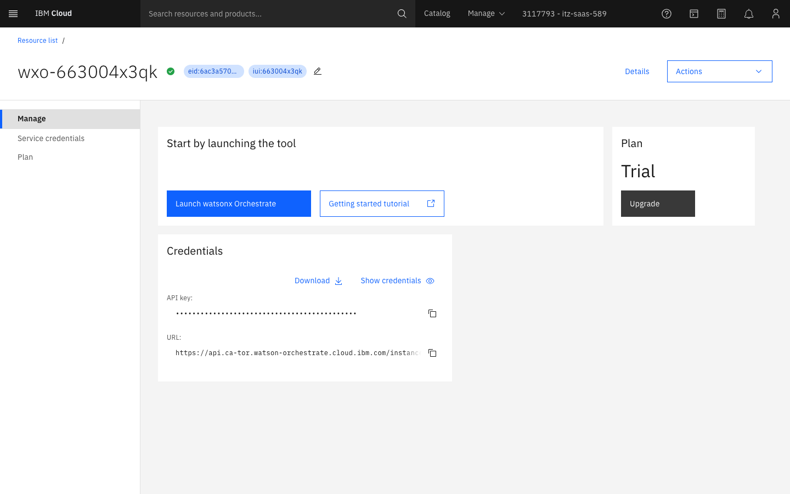
-
In the Credentials box, click the copy icon to the right of the URL field. Use the copy icon rather than selecting the text - the field is too narrow to show the whole URL.
It starts withhttps://api.…watson-orchestrate.cloud.ibm.com/instances/…and its region (for exampleca-tor) may differ from the example - paste exactly what IBM Cloud gives you.
This is your ★ WXO INSTANCE URL. Save it - Bob will ask for this. - Then click the blue Launch watsonx Orchestrate button to open your WxO workspace.
The API key in the Credentials section here is not what Bob needs. Bob needs an IBM Cloud API key that you create yourself under IAM → API keys - see step 0.5 below.
0.5 Create Your IBM Cloud API Key for Bob
This is not the key created when you create the Service ID, and not the API key on the WxO instance page. The right one is created under IAM → API keys, which is its own separate page:
- In IBM Cloud, click Manage in the top navigation bar, then Access (IAM).
- In the left-hand menu, click API keys.
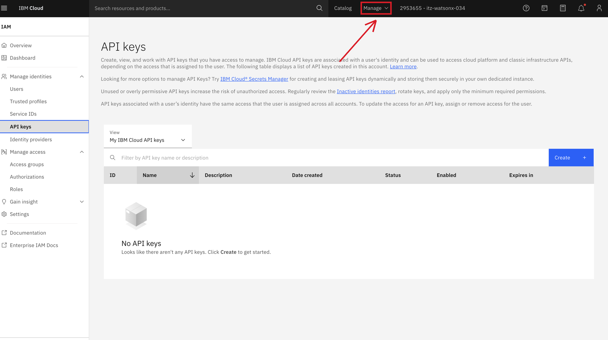
- Click Create +, enter a name (for example
Lab 2308 API Key), keep the defaults, and click Create.
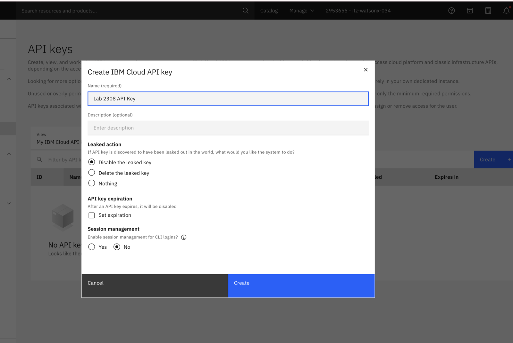
- Copy the key value immediately (it is only shown once).
This is your ★ IBM CLOUD API KEY. Save it - Bob will ask for this.
0.6 Find Your MCP Server URL for Bob
In your Excel file, find the line labelled MCP SERVER URL (give this to Bob) (under PART 2). Copy the full URL including https://.
Take the watsonx.Gov Application URL from PART 2 and change /openpages at the end to /mcp. That's your MCP Server URL.
0.7 Log In to OpenPages (for Module 2)
Find the watsonx.Gov Application URL in your Excel file (under PART 2) and open it in your browser. You'll see a TLS warning (TechZone uses a self-signed certificate) - click Advanced → Proceed to wxgov-govconsole… (unsafe). Log in with OpenPagesAdministrator / passw0rd.
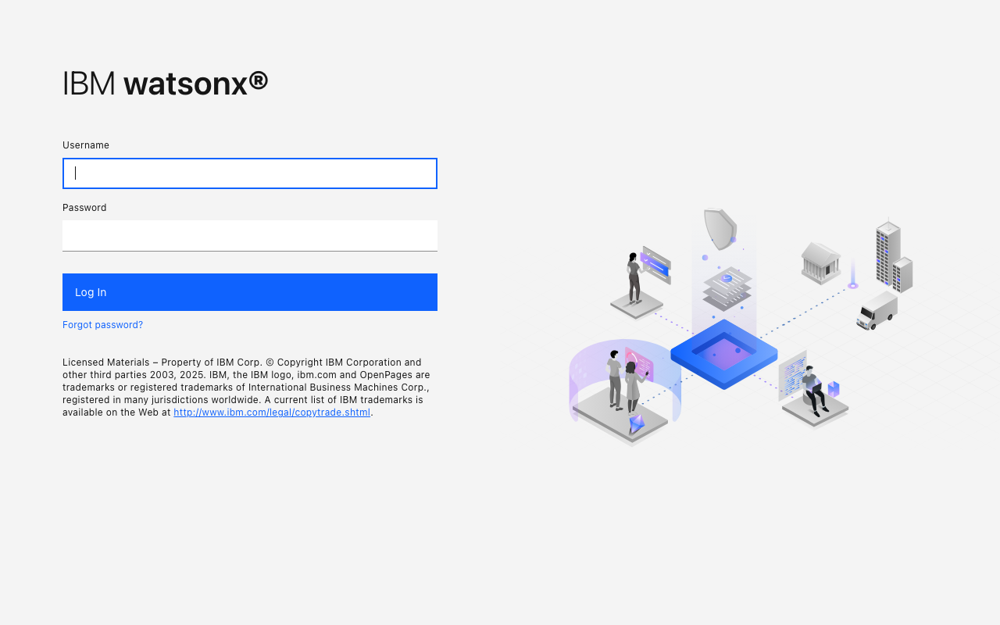
1.0 Module 1 - Start Here: Talk to Bob
You will set up everything through a short conversation with Bob. No terminal, no YAML editing, no scripting.
1.1 Open IBM Bob
IBM Bob is an application installed on your lab machine (it does not run in a browser).
Option A - Desktop icon: double-click the IBM Bob icon on your desktop.
Option B - No icon on the desktop (Windows):
- Click the Start button (Windows logo, bottom-left of the screen) or press the Windows key.
- Type Bob - or click All apps and scroll to IBM Bob.
- Click IBM Bob to launch it.
If Bob asks whether to import settings from another editor, click Skip for now.
1.2 Sign In with Your IBM ID
- Click the small Bob icon at the top of the window, beside the search bar. This opens the Bob chat in the right-hand side panel.
- In that panel, click the blue Log in to Bob button.
- Sign in to Bob with the IBM ID you already have (the one from Step A).
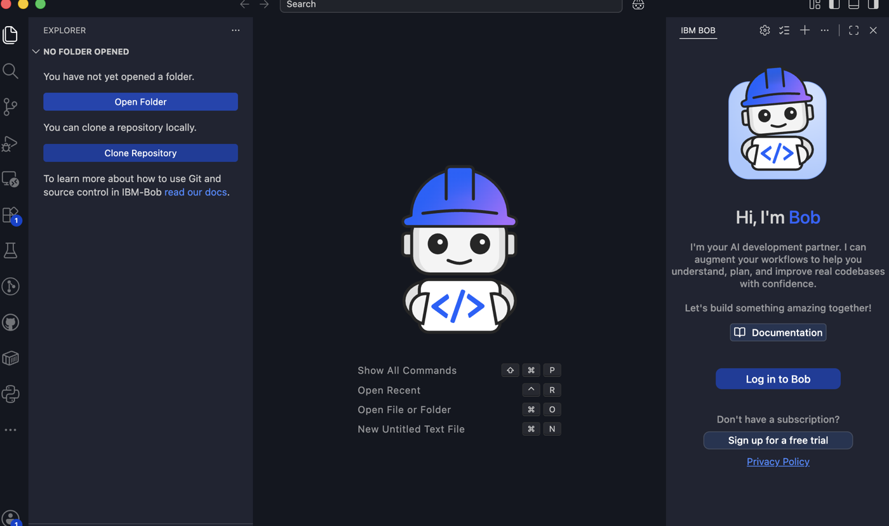
1.3 Select the Lab Team
Bob must be using the lab team before it can run the lab setup.
- Click the gear icon in the top-right corner of the Bob panel to open Bob Settings.
- In the left menu, select General.
- Next to Team, open the dropdown and select the lab team. Its name will be similar to
IBM-TechXchange-2026 (region: us-east)orLab-2308- your instructor will confirm the exact name. Do not leave it onIBM Internal. - Confirm the checkmark is next to the lab team.
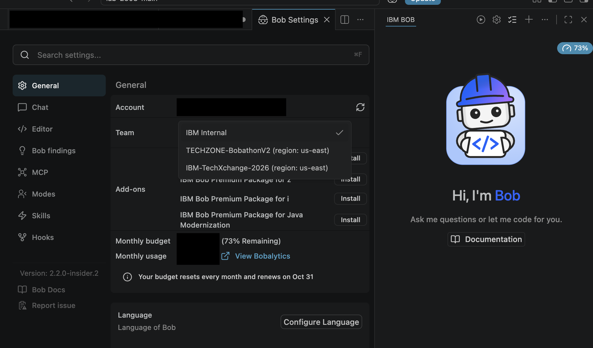
The screenshot shows IBM Internal checked - that is the default. Change it to the lab team. If you don't see the lab team in the list, sign out of Bob and sign in again; if it's still missing, ask an instructor.
1.4 Python (Bob Handles This)
Bob needs Python (3.11 to 3.14). There is nothing for you to check. When you send your first message to Bob, Bob checks your machine automatically and, if Python is missing, installs it for you (about 2 minutes). Just continue.
1.5 Get the Lab Files
Download the lab folder to your machine - no git required.
- Click the button above - your browser will download
lab-2308-main.zip. - Open File Explorer (Windows) or Finder (macOS) and locate the downloaded ZIP in your Downloads folder.
-
Unzip it - right-click the ZIP → Extract All… (Windows) or double-click (macOS).
You will get a folder calledlab-2308-main. Move it somewhere easy to find, for example:
C:\Users\YourName\Documents\lab-2308-main
If you have git installed, you can also run:
git clone https://github.com/haneen-bakbak/lab-2308.git
Either way works - you get the same files.
1.6 Open the Folder in Bob
-
Open the lab folder.
In the top-left of the Bob sidebar, click the folder icon (or go to File → Open Folder).
Navigate to thelab-2308-mainfolder you just unzipped and click Open.
You should see files likebootstrap.py,agents/, andmcp-proxy-shim/in the Explorer panel on the left. -
Open the mode dropdown.
Make sure you are signed in to Bob (step 1.2). At the bottom of the Bob panel, just under the message box, there is a dropdown that shows the current mode, usually Agent. Click it. -
Choose Lab 2308.
A list of modes opens. Scroll to the bottom of the list and click Lab 2308 - Risk Agent Setup (it may be shortened to Lab 2308 - Risk Agent Set…). -
Check it worked.
The dropdown at the bottom of the panel now reads Lab 2308 - Risk Ag… instead of Agent.
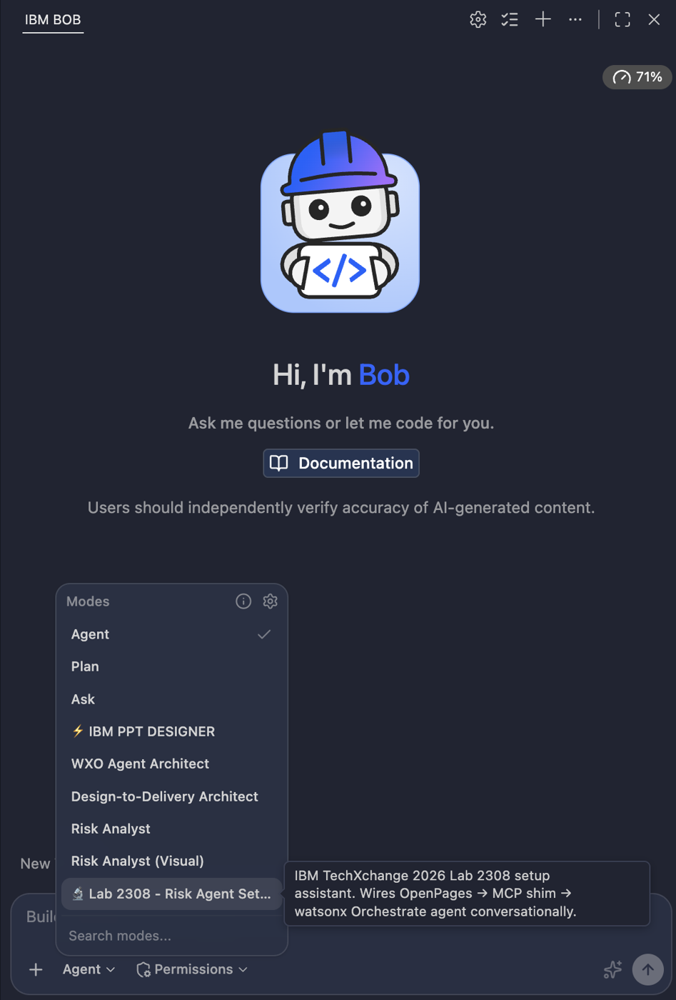
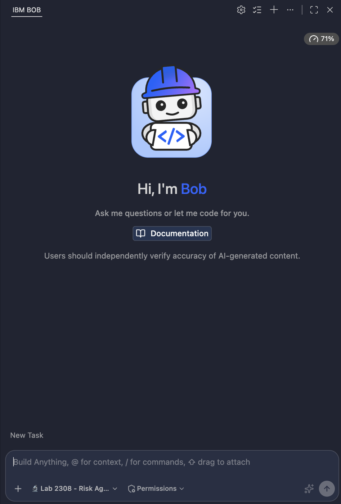
The folder may not have opened correctly. Confirm you opened the lab-2308-main folder itself (not a parent folder or a subfolder inside it). Close it and reopen, then check the mode selector again.
1.7 Talk to Bob
In the chat, type:
Start Here
"Hi Bob! I'm in Lab 2308 at TechXchange. Can you set me up?"
Bob will ask for three things - one at a time. Have your Excel file open - and the API key you created in step 0.5:
| Bob's question | Where to find it | Looks like |
|---|---|---|
| 1. MCP Server URL | Your Excel file → PART 2 → MCP SERVER URL (give this to Bob) | https://wxgov-govconsole-demo-XXXX.vsi.techzone.ibm.com/mcp |
| 2. WxO Instance URL | The URL field you copied from the Credentials box on your watsonx Orchestrate instance page in IBM Cloud (step 0.4) Not in your Excel file. | https://api.ca-tor.watson-orchestrate.cloud.ibm.com/instances/XXXX |
| 3. API key | The key you created in step 0.5: IBM Cloud → Manage → Access (IAM) → API keys → Create Not the key created with the Service ID, and not the key on the WxO instance page. | AbCdEfGh… (~44 chars) |
After you confirm all three values, Bob runs setup silently (~2–3 minutes). You'll see friendly progress messages. When Bob says "🎉 You're all set!", your agent is live - proceed to Module 2.
Stay in Lab 2308 mode and tell Bob what you're seeing. Bob already knows your Python version and install state and will diagnose and fix silently.
2.0 Module 2 - Explore OpenPages GRC
Before chatting with the agent, spend a couple minutes exploring the source system it will be querying.
2.1 Log In to OpenPages
Open your OpenPages Application URL in your browser and log in with the credentials provided by your instructor.
2.2 Find the Risk Records
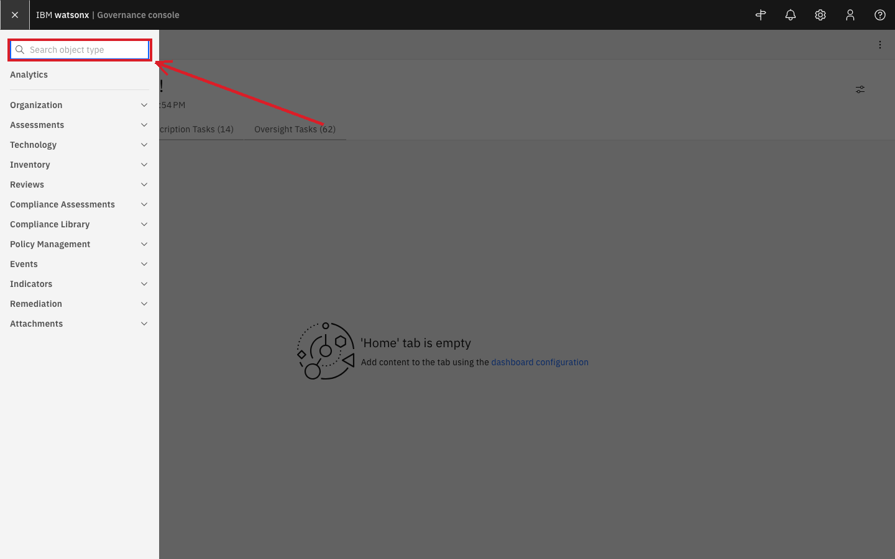
- Click the top-left Navigation Menu (hamburger icon).
- In the Search object type box at the top of the menu, type Risk and click the Risk entry. There is no tab called "Risk register" - the object type is simply called Risk.
- Notice the Resource ID format (e.g.
I01-RSK-01-01or numeric21011).
What you should see: the Risks list
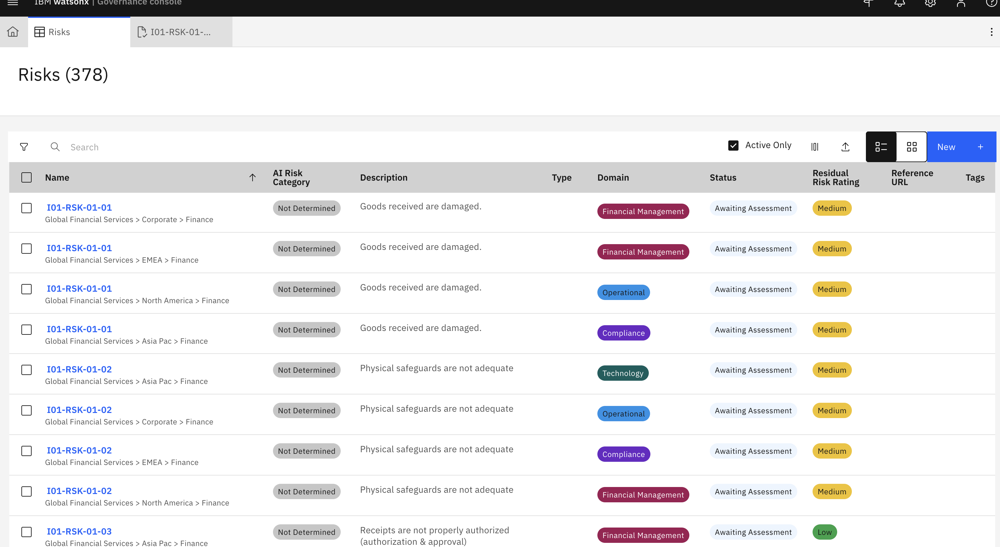
Take a minute to explore this list. It is the data your agent will query in Module 3.
- Read the columns: Name (the Resource ID, for example
I01-RSK-01-01), Description, Domain, Status and Residual Risk Rating. - Look at the Status column. Many risks show Awaiting Assessment. This is the kind of assessment gap your agent will find in Module 3.
- Look at the Domain column (Financial Management, Operational, Compliance, Technology). The same risk name can appear more than once, under different business entities shown beneath the name (for example Global Financial Services > EMEA > Finance).
What you should see: a single risk record
Click a risk name, for example I01-RSK-01-01, to open it.
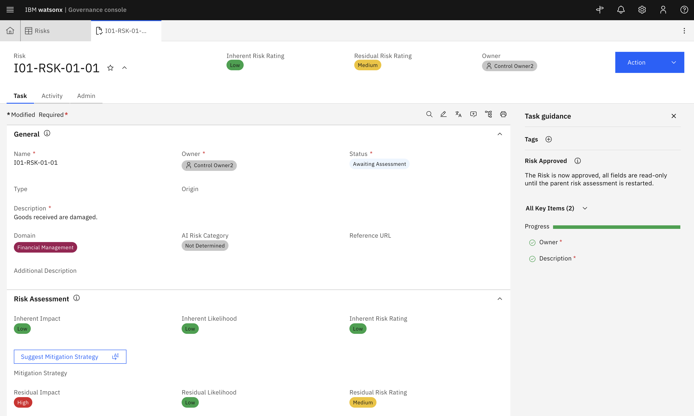
- In the General section, find Name, Owner, Status, Description and Domain.
- In the Risk Assessment section, find the Inherent and Residual Impact, Likelihood and Risk Rating.
- Note the Status and Description of this risk. In Module 3 you will ask the agent about risks like this one, and later create a new one.
These are the labels you see on screen. Behind them, OpenPages stores each one under an internal field name (for example, Status is OPSS-Rsk:Status). You never type these names: your agent reads them from the OpenPages schema at runtime, so it uses the exact field names instead of guessing.
3.0 Module 3 - Chat With Your Risk Agent
Now test your live agent inside watsonx Orchestrate. Follow every step below exactly - the agent dropdown is easy to miss.
3.1 Open the Chat and Select Your Agent
Open your IBM Cloud Resource List → AI / Machine Learning → your watsonx Orchestrate instance → Launch watsonx Orchestrate (same path as step 0.3). Tip: keep watsonx Orchestrate open in its own browser tab so you can switch back to it easily from OpenPages.
Step 1. In the left navigation bar, click Chat (the speech bubble icon near the top).
Step 2. At the top of the chat drawer, click the agent dropdown - it defaults to AskOrchestrate. Click it and select lab2308_risk_agent.
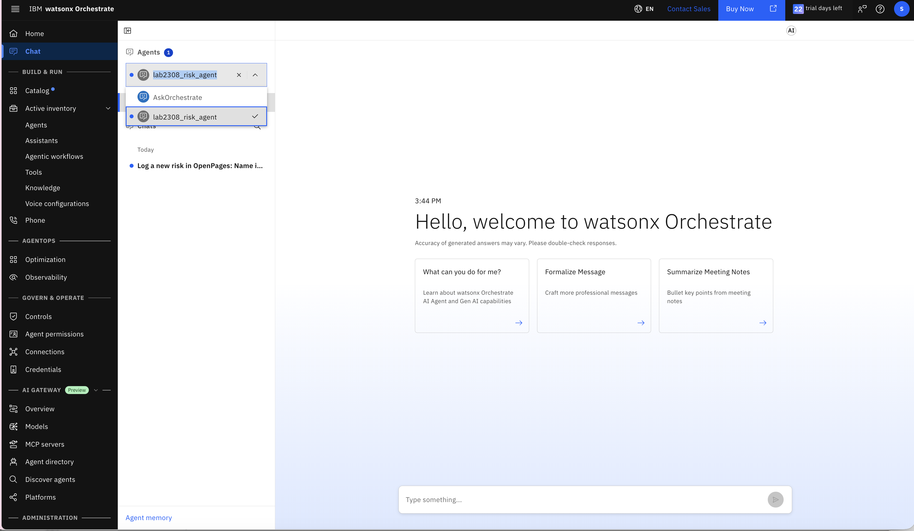
AskOrchestrate is the default and has no OpenPages tools. If you send prompts to it, it will say it cannot query risk data. Always confirm the dropdown shows lab2308_risk_agent before typing.
Step 3. Confirm lab2308_risk_agent appears in the Agents header at the top of the chat panel, then type your prompt in the input box at the bottom and press Enter.
3.2 Guided Test Prompts: The Compliance Scenario
You are a risk analyst at a financial institution. Every control in this environment is sitting at "Awaiting Assessment". Your job is to find the gap, log the risk, and link the control.
Prompt 1 - Find the Compliance Gap
Prompt 1
"Which of our risk categories have controls that are still awaiting assessment?"
When the agent replies, click Show Reasoning next to the agent name, just above the answer. watsonx Orchestrate will share the agent's thought process: which tool it chose, the exact query it sent to OpenPages, and the raw data that came back. It is worth a look. It helps you understand what is happening behind the scenes, and it is the same evidence you will study in Module 4. Click Hide Reasoning to close it again.
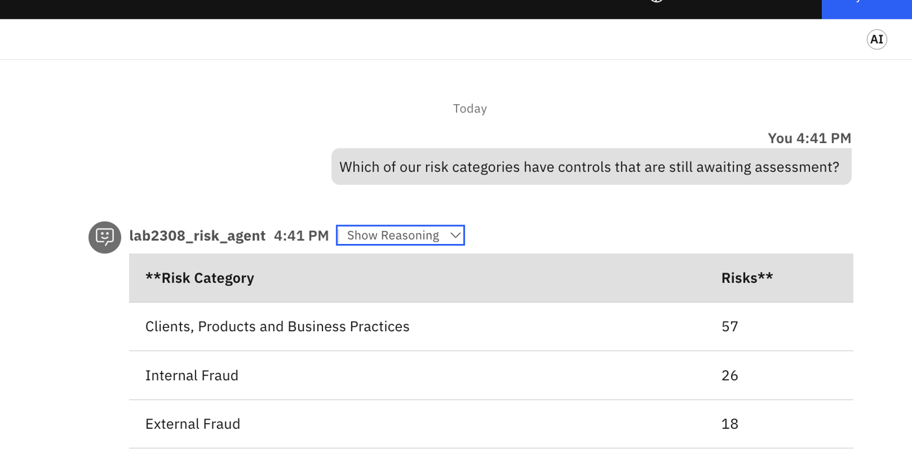
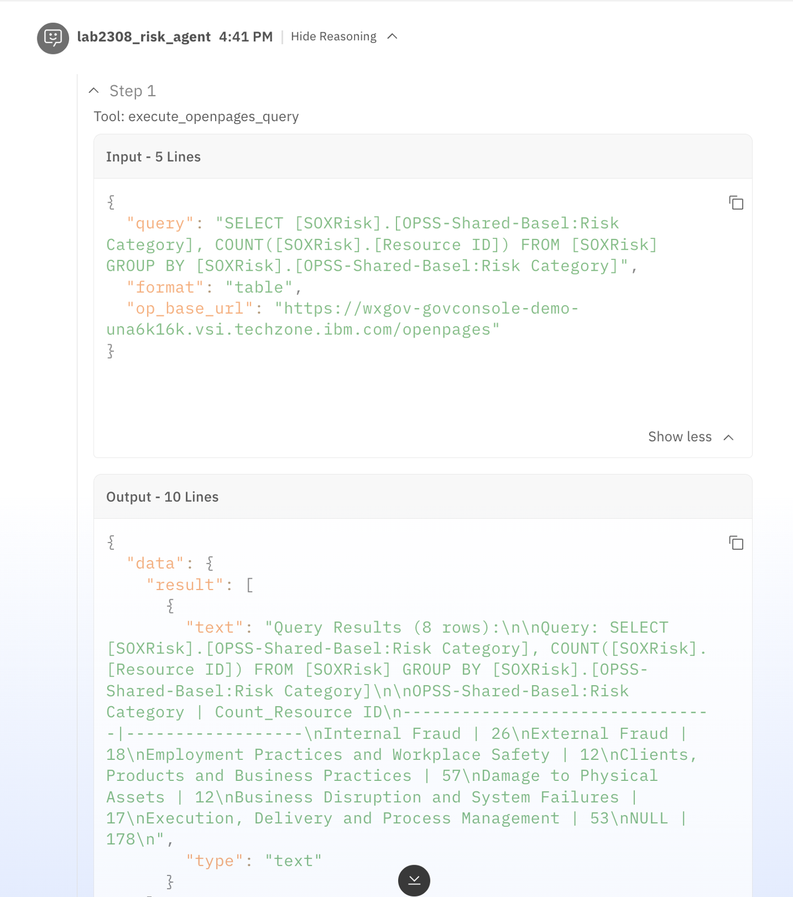
Expected behavior: The agent calls openpages_get_resource to inspect the SOXControl schema, executes a query for controls with status Awaiting Assessment, groups them by OPSS-Shared-Basel:Risk Category, and highlights the most exposed category. The category depends on the data in your OpenPages environment - seeing Internal Fraud, External Fraud or another category is expected and fine.
Prompt 2 - Explain the Gap
Prompt 2
"Explain the gap briefly."
Expected behavior: The agent summarises which category has the most risks and notes how many controls are still awaiting assessment - a short plain-English explanation using the data already retrieved.
Prompt 3 - Create a New Risk Record in OpenPages
Prompt 3
"Log a new risk in OpenPages: Name it 'Inadequate Fraud Detection Controls', set the category to External Fraud, and note that controls are unassessed."
If your agent named a different category in Prompt 2, you can swap it (and a matching risk name) into the prompt above.
Expected behavior: The agent finds a parent process (e.g. Retail Banking), calls openpages_upsert_object with object_type: "soxrisk", and returns the newly assigned numeric Resource ID with a direct clickable link into OpenPages.
Prompt 4 - Associate the Control to the New Risk
Prompt 4
"Link control CTL-04-03-03-01 to our new Inadequate Fraud Detection Controls risk."
Expected behavior: The agent resolves the control ID, invokes openpages_associate_objects, and confirms the bidirectional relationship.
3.3 What the Agent Is Doing (Schema-First Pattern)
Every response follows this robust execution sequence:
User Prompt
│
▼
1. openpages_get_resource("openpages://catalog/object_types") ← Discover types
│
▼
2. openpages_get_resource("openpages://schema/SOXRisk") ← Introspect valid fields
│
▼
3. execute_openpages_query(SELECT confirmed_fields FROM...) ← Query with verified fields
│
▼
4. Rewrite internal opapp URLs to external TechZone hostname ← Format links
│
▼
5. Synthesize and format Markdown response
4.0 Module 4 - Inspect Live Telemetry & Execution Traces
Every prompt you sent in Module 3 is recorded as a full execution trace - every tool call, every reasoning step, every response. Here's how to find and read them.
4.1 Navigate to AgentOps Observability
Step 1. In the left navigation bar, scroll down to the AGENTOPS section and click Observability.
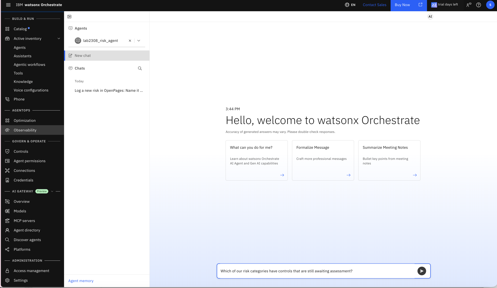
Step 2. On the Analytics page, find lab2308_risk_agent in the Agent Activity table on the right and click it.
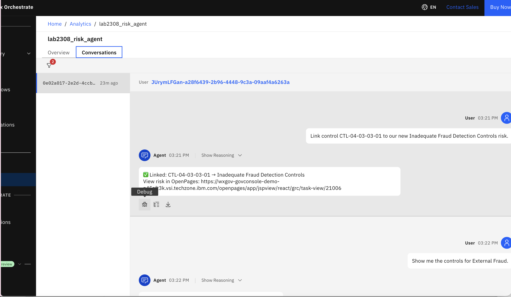
Step 3. Click the Conversations tab. You will see a list of every conversation. Find yours and click the Debug button on that row.
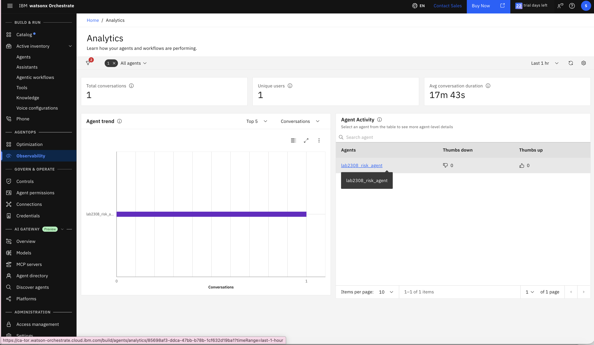
Step 4. The debug view opens - an Agent flow node/tree diagram on the left and an Execution timeline on the right listing every step. Click any node or timeline entry to expand its full input and output.
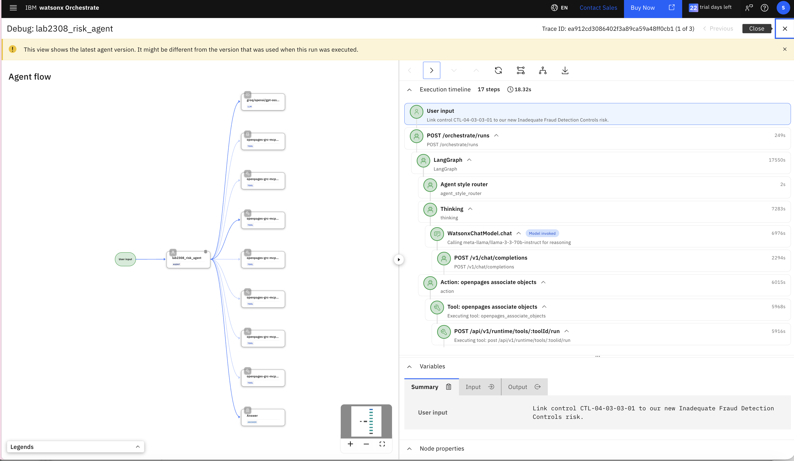
Each step is labelled: Thinking (LLM reasoning), WatsonxChatModel.chat (model call), Action: openpages … (tool invoked), Tool: openpages … (result returned). The Input / Output tabs on the right show the exact data flowing in and out of each step.
4.2 Anatomy of an MCP Execution Trace
| Span Type | Component | What It Reveals in the Trace |
|---|---|---|
| TOOL (Schema Discovery) | openpages_get_resource | The exact URI (openpages://schema/SOXControl) introspecting valid fields prior to query generation. |
| TOOL (Data Query) | execute_openpages_query | The SQL query payload, execution latency (ms), HTTP 200 response, and row count. |
| TOOL (Write / Association) | openpages_upsert_object | The JSON mutation payload sent to OpenPages and the returned primary resource_id. |
| LLM SPAN (Reasoning) | llama-3-3-70b-instruct | ReAct reasoning steps, token counts, inference latency, and output formatting. |
4.3 Try Your Own Prompts & Watch the Traces
You are currently in AgentOps Observability, which only shows past conversations - you can't type prompts there. To add the queries below, return to the Chat page: click Chat in the left navigation bar, make sure lab2308_risk_agent is selected, and type each prompt in the chat box. Then come back to Observability → Conversations → Debug to inspect the new trace.
Try sending these additional queries to observe the trace inspector in real time:
Test Prompt A
"How many risks are currently in an Open status?"
Test Prompt B
"List all risks that are High severity."
Test Prompt C
"Summarise the risk landscape - how many risks exist per status?"
Troubleshooting & FAQs
If something behaves unexpectedly during the lab, simply ask Bob for help. Bob can inspect and repair connections automatically:
| Symptom | What to tell Bob |
|---|---|
| Agent says "I don't have access to that tool" | "Bob, my agent says it can't find the MCP tools. Can you re-register the toolkit?" |
| Tool calls time out | "Bob, the agent is timing out. Can you check the OpenPages endpoint?" |
| Authentication / 401 error | "Bob, I'm getting an authentication error. Can you refresh the connection?" |
| Empty risk list returned | "Bob, the agent returned an empty list. My OpenPages URL is <paste URL>." |
Wrap-Up & Key Takeaways
✅ Built an autonomous AI risk agent connected to IBM OpenPages via Model Context Protocol (MCP).
✅ Eliminated field hallucination through dynamic schema-first introspection.
✅ Executed natural language queries, risk creation, and control association against live GRC databases.
✅ Inspected full telemetry traces and execution spans in watsonx Orchestrate.
Finished Early? Explore the Control Plane
Nothing here is required. You have a working agent and a trace history, so use the time to poke around watsonx Orchestrate and see what else the control plane gives you. Pick any idea below, in any order.
Some screens depend on the permissions and features enabled in your assigned instance. If a menu item is missing, skip it and try another. Answers will vary, because they depend on the activity in your own tenant.
Ask Orchestrate About Your Own Fleet
Click the Agent assistant icon at the top right of watsonx Orchestrate and ask questions about the agents in your instance. Click Show Reasoning to see how the answer was worked out. Your chats from this lab are part of the data.
Explore 1
"Which agents are underperforming?"
Explore 2
"How many conversations did lab2308_risk_agent handle, and were there any errors?"
Explore 3
"Which agent uses the most tokens, and which has the highest latency?"
Explore 4
"Which agents have no test cases or have never been evaluated?"
Explore 5
"Which controls are in place, and which agents do they cover?"
Tour the AgentOps Dashboard
In the left navigation bar, open AgentOps and look beyond the Conversations tab you used in Module 4.
- Change the time range and the agent selector, and watch every panel re-scope.
- Switch between the dashboard tabs, such as Overview, Adoption, Quality, Reliability, FinOps and Security and Risk, and see what each lens shows about your agent.
- Use Customize view to add, remove or rearrange widgets.
- On the FinOps tab, check token usage by agent and by model. It reports tokens, not dollars.
Try a Policy Control
Controls are enforced by the platform whether or not the model decides to follow them. In the left navigation bar, open Controls and look at what is already there. If you have permission, you can create a PII Filter, choose what to detect (for example phone numbers), choose whether it masks or blocks, assign lab2308_risk_agent, and activate it.
Then start a new chat with the agent and try this prompt. Compare what you typed with what the agent reports back, and open the trace to see where the control acted.
Explore 6
"Log a new risk in OpenPages named 'Test Contact Risk'. In the description, say the owner can be reached on 9876543210."
This prompt writes a record to the OpenPages environment assigned to you. Deactivate the control when you are done so it does not affect anything else.
Evaluate and Optimize
- Open
lab2308_risk_agentand look at the Evaluate tab. Review the available metrics, such as tool call precision and recall. - Open AgentOps and then Optimization, click Optimize an agent, and read the readiness plan. It tells you how many test cases the agent has and what it would run. Optimization needs test cases to be useful, so an agent with very few may only produce a warning.
Look at Agents, Connections and Access
- Open the Agent Directory under AI Gateway and see what agents your instance knows about.
- Open Agent Inventory and compare the
lab2308_risk_agentcard with the others. Note which agents are native and which are external. - Check the Connections page for the MCP connection Bob created.
- If you have admin rights, look at where users, roles and data retention settings live.
Make Up Your Own Tests
Go back to Chat with lab2308_risk_agent and ask your own questions about the risks and controls in OpenPages. Then open AgentOps → Observability → Conversations → Debug and look at the schema lookups, the queries it wrote and how long each step took. Ask an instructor if you want help reading a trace.
Reference & MCP Tool Specifications
| MCP Tool Name | Function & Description |
|---|---|
execute_openpages_query | Executes SQL-style filter queries against OpenPages object tables. |
openpages_get_resource | Fetches live object schema definitions (e.g. openpages://schema/SOXRisk). |
openpages_list_resources | Lists available schema resources and catalog endpoints. |
openpages_upsert_object | Creates or updates GRC objects (Risks, Controls, Issues). |
openpages_associate_objects | Establishes parent-child or association links between GRC records. |
openpages_dissociate_objects | Removes association links between GRC records. |
echo | Connectivity and latency heartbeat test for the MCP server. |